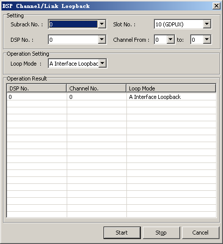

This describes how to perform loopback on DSP speech channel to locate the fault on the DSP speech channel.
Prerequisites
- The LMT runs normally.
- The communication between the LMT and the BSC is normal.
Context
The DSP speech loopback can be performed on the A interface and the Abis interface.
The loopback on the A interface indicates that the data received on the A interface is sent as the data source. The data can be sent in BTS and MSC directions. The loopback on the Abis interface indicates that the data received on the Abis interface is sent as the data source. The data can be sent in BTS and MSC directions. The channel number of the A interface and the Abis interface ranges from 0 to 43.
Procedure
- Through GUI
- Choose to loop back the links in the DSP Channel.
- Set parameters in the Operation Setting and Setting areas, and then click Start. The loopback is started, as shown in Figure 1.
Figure 1 Starting the DSP speech channel loopback

- Click Stop to stop the loopback.
- Through MML
- You can run the following commands to loop back the DSP speech channel to locate the speech fault on the LMT.
- Run the STR DSPTCLOP command to start looping back the DSP speech channel.
- Run the STP DSPTCLOP command to stop looping back the DSP speech channel.
Copyright © Huawei Technologies Co., Ltd.